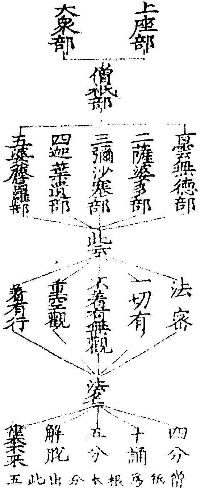

天台四教儀集註卷第三 稼三
如釋籤云不定與祕並皆不出同[聽-王]異聞但有互相知互不相知以辨兩異。
此約鹿苑聞小證大而說如籤云酪中雖無二別不妨以八萬及一人以辯定不定也。
此以法華涅槃對鹿苑說即鹿苑中密說圓常與法華涅槃悟入是同如別行玄記云若八萬諸天獲無生忍故云密去又大疏云利根人於三藏中宜聞常住聞即得解如初轉法輪時八萬諸天得無生忍乃是密教意據此豈可謂同[聽-王]生滅耶問鹿苑會上只一八萬諸天何故諸文或定不定顯密有異耶荅如來赴機難思祖師釋義非一據諸天得法眼淨即顯露定教如云聲聞見八萬是也據聞小證大即顯露不定教如云八萬諸天得無生忍是也若曰密聞圓常即祕密教如云利人密去是也經意多含不可一凖然八萬諸天既是利根密為正意盖於三藏中宜聞常住故也且祕密教何以得傳如妙樂一(十八)云祕密不傳降佛已還非所述故尚非阿難能受豈弘教者所量(文)盖用後敘出故可傳耳如妙樂云阿難非不傳祕赴機之祕非所傳耳故祕密所用全是顯教是故傳祕秖名傳顯(文)。
第四不定教者亦由前四味中佛以一音演說法眾生隨類各得解此則如來不思議力能令眾生於漸說中得頓益於頓說中得漸益如是得益不同故言不定教也。
盖一類機宿世於頓有漸種於漸有頓種故今聞小證大聞大證小推功歸教教名不定矣如大經置毒發毒大論八萬諸天得無生忍等皆不定義古師以金光明等別為一緣名偏方不定教今家不然一時一說一念之中備有不定一音通大小因果當分跨節顯之與密定與不定今是不定一音該乎大小是果人所用於漸說中得頓益妙玄云雖說四諦生滅而不妨不生不滅等釋籤云此指鹿苑雖施於漸不起於頓於頓說中得漸益妙玄云雖高山頓說不動寂場而遊鹿苑釋籤云此指頓後漸初不動於頓而施漸化若方等般若雖為菩薩說佛境界而有二乘智斷此二時中俱有小果新得舊得如常所明雖五人證果不妨八萬諸天得無生忍此重指漸初對般若說前文約法此中約人當知即頓而漸即漸而頓。
然秘密不定二教教下義理只是藏通別圓。
上指四時為祕密不定之部今明部中之教故此二教以藏等四教為當體體真中二理為所依體如妙樂一(十九)云不定祕密義各含四顯之與密定與不定相對論故。
化儀四教齊此。
此以法華相待之意判前四時不出頓等八教意顯法華超八教外出四時表故釋籤一十六科玄文云初明八教以辨昔次約今經以顯妙若釋籤一十七云祕密橫被無時不遍者此約方等對前二時為言考彼問辭自見又釋籤十廿四云五味則一道竪進味味有半滿相成復於味味皆有祕密及以不定文盖約五味對半滿以論相成故玄文云雖復俱遊行藏得所俱遊論相成行藏論用捨華嚴唯滿不半乃至法華廢半明滿半有成滿之功非謂味味各有半滿又云味味皆有祕密不定者此且據前四時為言或顯密相成則以昔時祕密不定成今法華是顯非祕密是定非不定矣妙玄六二十引大論云餘經非祕密法華是祕密者釋籤七十三云非八教中之祕密但是前所未說為祕聞已無外為密次說法華妙法難觧取喻蓮華蓮華華果同時妙法則權實一體故有迹門三喻本門三喻。

妙名一唱待絕俱時故相待論判出前三教四時之上絕待論開復能開前令皆圓妙今文但云開者盖上既云化儀四教齊此則顯法華出前四時况復下文歷部揀教即是判也然待絕二妙妙體無殊約義而論開為正意凡論開權有約部約教約界約理等今云頓漸者乃約部通開頓漸是權属前四時非頓非漸是實即今法華又三即是權一即是實故以開廢會三而結云故言開權顯實等也開者發也拓也昔不言三是方便故方便門閉今言三是方便故方便門開廢者捨之別名開已俱實無權可論義當於廢約法乃開時即廢約喻必義須先開若約理者開廢俱時開時已廢故也或謂今文開廢會三凖彼玄籤第一對於四一義雖無妨但在彼不對其文則重在今但作結上開部義似稍允盖法華部開廢會三法應尒也如下文云總開會廢前四味捔舊於開權有同體異體之辨然約所開法體及能開之妙佛意邊論皆同體也但所開機情在昔執之為異故不得不開如釋籤云法本自妙麤由物情但開其情理自復本(文)玄文云開昔之異顯今之同故開機情的開異體也。
言權實者名通今昔義意不同。
權謂權謀暫用還廢實謂實錄究竟指歸昔有偏圓自他權實等義今有為實施權開權顯實等義義不同也在昔權實各趣在今權皆趣實意不同也妙樂十三十三云權實之語非獨今經相即之言出自於此文。
謂法華已前權實不同大小相隔。
此下釋出今昔權實義意不同文初約部通開故以頓漸為權法華為實此揀昔日部中之教有權有實然在昔實妙權麄在今開觕即妙方顯義意不同也今且先明昔之權實故云謂法華已前權實不同等權實約偏圓大小約半滿亦可權實約法大小約人在昔之中皆有此義然文意正明昔部權實而復明大小者須知權通偏教而未的顯權中三藏小機歷前四時與大相隔直至法華方得入圓故論權實復明大小雖明大小不出權實如下文云重舉前四時權盖指此小機也。
如華嚴時一權一實(圓實別權)各不相即大不納小故小雖在座如聾若瘂是故所說法門雖廣大圓滿攝機不[書-曰+皿]不暢如來出世本懷。
一權一實釋權實不同大不納小釋大小相隔今此正當大隔於小故小雖在座如聾若啞釋籤一十一云華嚴大機尚隔於別小機被隱一向不聞是故但立頓大之名不立一乘獨妙之稱非佛本懷良由於此華嚴頓大尚非本懷况復鹿苑故三藏教首及以部內麄尚未周故妙號都絕方等般若比說可知文。
所以者何初頓部有一麤(別教)一妙(圓教)一妙則與法華無二無別若是一麤須待法華開會廢了方始稱妙。
所以者何此徵起釋出不暢本懷之意皆由在昔不能開觕顯妙故此以下歷部揀教明判明開初頓部等於此別明頓中觕教須待開會者以時人謂華嚴勝故也。
次鹿苑但麤無妙(藏教)次方等三麤(藏通別)一妙(圓教)次般若二麤(通別)一妙(圓教)。
此約相待判前部中麄妙也。
來至法華會上總開會廢前四味麤令成一乘妙諸味圓教更不須開本自圓融不待開也。
此開前四味部中三教之麄成今一乘妙也且昔部中三教既開昔部中圓還須開否故下即云諸味圓等也以今圓昔圓二圓不別此約教別與也若妙樂云圓人初心須聞開顯諸法實相者盖昔圓人義有兩向名字初心謂圓隔偏聞佛開權隔偏情泯非開圓體也若觀行去已入實者但論增進如經揀眾云除諸菩薩眾信力堅固者是也信力五品堅固十信若昔部中三教權人來至法華一向須開若三教權果本是圓果豈可更開令成圓佛若對機之權亦不妨論開如云開丈六垢衣等也又妙樂云今經是圓復須開顯者盖顯法華中圓非但出前四時復須開顯諸教也。
正判昔部属麄除鹿苑外雖皆有圓以兼等故不得稱妙麄人細人二俱犯過此約部通奪也釋籤一十云始自華嚴終至般若雖多不同但為次第三諦所攝今經會實方曰圓融文是故文初約部通開須云開前頓漸等也如上相待論判絕待論開約教別與約部通奪番覆抑揚方顯法華出諸教上部圓教圓妙絕群經出世本懷於此暢矣故即引經四一為證。
故文云十方佛土中唯有一乘法無二亦無三(教一)正直捨方便但說無上道(行一)但為菩薩不為小乘(人一)世間相常住(理一)。
以純一故獨得妙名故引一以顯妙盖一即妙也十方佛土等據其同者而言亦約佛意也一乘法者部圓教圓故無二亦無三者約教則無通教半滿相對之二無三藏之三乘無有餘乘即無別教及圓入別也約部則無般若所帶之二無方等所對之三方等之藏則攝鹿苑二酥之別則該華嚴唯一佛乘故云教一正直捨方便但說無上道者文句五五云五乘是曲而非直通別偏傍而非正今皆捨彼偏曲但說正直一道也文疏據說邊属教一今據道名能通故属行一但為菩薩者約佛意但為菩薩據昔方便謂教化三乘今此同一菩薩人故云人一世間相常住者十界依正隔歷差別之相名世間相以即理故皆常住也若乃情見生滅遷流廓尒情忘諸相常住常既即性非常無常言偏意圓斯之謂矣學者於此宜觧會馬。
時人未得法華妙旨但見部內有三車窮子化城等譬乃謂不及餘經盖不知重舉前四時權獨顯大車但付家業唯至寶所故致誹謗之咎也。
當代弘教之人未觧法華開權絕待微妙旨趣但見經中有三車等喻乃謂不及華嚴等經盖不知三車等喻乃重舉昔日之權意在指權即實故舉三車顯大車窮子付家業化城至寶所不知此意故有謗法之愆也三車羊車譬聲聞乘鹿車譬緣覺乘水牛車譬菩薩乘即鹿苑三乘也化城文句七十八云以神力故無而歘有名之為化防非禦敵名之為城文譬真諦涅柈能防見思也寶所譬寂光大經中名寶渚前四時權且三車等指昔三藏三乘而云重舉前四時權者須知三周開顯藏圓相對雖正開小機然舉昔之權則該四時又此小機歷前四時名四時權也妙樂五十三云立一開權之言於今乃成二意一者騰昔所施二為顯實之所不指所開無由說實况指權是權知非究竟既顯實已權全是實文誹謗釋籤十三云當知法華約部則尚破華嚴般若約教則尚破別教後心文人不見之故致誹謗。
約時則日輪當午罄無側影(第五時)。
十界咸開無不成佛如日方中無處不南周禮用一尺五寸土圭立八尺之表夏至午時以側日影求地之中以建國宋嚴觀二師與太史何承天用此法測日影以定中國表北得影一尺五寸與土圭等地上餘陰一寸天上萬里則知天竺方為地中今云罄無側影據天竺說。
約味則從熟酥出醍醐此從摩訶般若出法華。
五醍醐味釋籤一十九問彼經自以醍醐譬於涅柈今何得以譬於法華荅一家義意謂二部同味然涅柈尚劣何者法華開權如破大陣餘機至彼如殘黨不難故以法華為大[(冰-水+〡)*ㄆ]涅柈為捃拾若不尓者涅柈不應遙指八千聲聞於法華中得授記莂見如來性如秋收冬藏更無所作文然彼經本無出法華之語今約義說故但云此從摩訶般若出法華。
信解品云聚會親族即自宣言此實我子我實其父吾今所有皆是子有付與家業窮子歡喜得未曾有。
文句六三十一云十方法身菩薩影響者為親族影響之眾多是釋迦昔日同業並共如來於二萬億佛所共開化之於其即是伯叔之行故用此為親族文此實我子我實其父結會父子文句六二十一云實從我受學實是我子從我起解是我所生我實曾於二萬億佛所常教大法故我實是父文吾今所有皆是子有正付家業文句六三十一云一切大乘萬德萬行故云所有文又如來藏子性不殊故云皆是子有當知如來所有即子本有。
此領何義荅即般若之後次說法華先已領知庫藏諸物臨命終時直付家業而已譬前轉教皆知法門說法華時開示悟入佛之知見授記作佛而已。
臨命終時靈山唱入涅柈時也譬前轉教皆知法門文句六三十一云追指昔日大品領教所委有廣畧般若共不共法是汝所知即汝所有故法華但明佛之知見更不廣說一切行相也文開示悟入文句四十三約四意消之一約四位住行向地二約四智道慧道種慧一切智一切種智即上圓位能契之智也三約四門四約觀心妙樂云約智約位唯聖方開約觀約門乃通名字不妨高位不棄眾生文又二帋云若作餘釋為令之說徒施佛之知見安在文佛之知見佛知即一切種智具足三智佛見即佛眼具足五眼亦名真實知見若通途被開其不在座展轉為說或在界外亦得聞之或佛滅後敦逼令信乃至久遠四惡麄智人天世智若不開之則佛之知見永埋四趣長沒人天若別開者則在座得益當機妙悟得受記者授記聖言說與曰授果與心期曰記若通途記如法師品初八部四眾三乘之類在座聞佛一句偈者皆與授記當得菩提乃至滅後聞一句偈亦與授記若別記者如迹門別授應身記本門授法身記又揔與七百別與刼國名號等記五百也妙樂四廿六云二乘且與八相記者更令與物結淨土緣菩薩已於多刼利物隨熟隨脫不假八相淺近之記二乘不爾是故須之文。
次說大涅槃者有二義。
佛出淨土不說涅柈即以法華為後教後味如燈明迦葉等今佛熟前番人以法華為醍醐更熟後番人重將般若淘汰方入涅柈復以涅柈為後教後味。
一為未熟者更說四教具談佛性令具真常入大涅槃故名捃拾教二為末代鈍根於佛法中起斷滅見夭傷慧命亡失法身設三種權扶一圓實故名扶律談常教。
一為未熟者即五千起去人天被移者更說四教法華廢竟今經復用故云更說而具追說追泯兩種四教妙玄二廿二云涅槃聖行品追分別眾經故具說四種四諦施權德王品追泯眾經俱寂四種四諦文開權即四不可說也釋籤三十三云追者退也却更分別前諸味也泯者會也自法華已前諸經皆泯此意則順法華部也至大經中更分別者為被末代故大經中具斯二說文具談佛性令具真常涅槃經首廣開常宗令一切眾生皆知常住佛性入祕密藏止觀云涅槃寄滅談常輔行云寄應迹滅度談法身圓常捃拾釋籤一十九云法華開權如已破大陣餘機至彼如殘黨不難故法華為大[(冰-水+〡)*ㄆ]涅柈為捃拾文二為末代鈍根妙玄十廿一云涅柈臨滅更扶三藏誡約將來使末代鈍根不於佛法中起斷滅見廣開常宗破此顛倒令佛法久住文起斷滅見一者破戒撥無因果斷見二者說於無常滅見夭傷慧命無戒門也亡失法身無乘門也若常途論自報慧命理體法身在眾生不减諸佛不增以迷背故夭傷亡失今此為無乘戒兩門以致慧命法身夭傷亡失意與常途自不侔矣設三種權扶一圓實輔行三下廿一云彼經四教皆知常住本意在圓權用三教以為穌息實不保權以為究竟文扶律談常教釋籤云以彼經部前後諸文扶事說常若末代中諸惡比丘破戒戒門說於如來無常乘門及讀誦外典則並無乘戒失常住命頼由此經扶律說常則乘戒具足故號此經為贖常住命之重寶也如釋籤三引經應有單複二義所言複者謂乘及戒以律助常意也若言不許畜八不淨此是戒門事門若說如來畢竟入於涅槃及遮外典此是乘門理門此扶律談常意也所言單者唯約戒門彼經扶律律是贖常住命之重寶四念處三二云若別圓有法身慧命何須贖命贖命意在藏通灰斷之命令得法身常住也文既扶律說常則以律助常也如義例云佛世尚以涅槃為壽况末代根鈍非助不前然上云設三種權扶一圓實何故結云扶律談常且三權俱律耶須知上明經中具用四教則以偏助圓後以乘戒兩門重扶三藏之意結歸為末代鈍根故云扶律談常也。
然若論時味與法華同論其部內純雜小異故文云從摩呵般若出大涅槃前法華合此經為第五時也。
妙玄十廿一云然二經教意起[書-曰+皿]是同如法華三周說法斷奠聲聞咸歸一實後開近顯遠明菩薩事涅柈亦尓先勝三修常樂我斥劣三修若無常無我斷奠聲聞入祕密藏後三十六問明菩薩事文論其部內純雜小異妙玄十八云涅柈猶帶三乘得道此經純一無雜涅槃更不發迹此經顯本義彰妙樂七十九約十六意揀云云故文云等別行義疏記云彼經就般若部後分結撮五味次苐也文前法華等者今經時味既同法華故此文中更不別立時味但云前法華合此經為第五時也。
問此經具四教與前方等部具說四教為同為異荅名同義異方等中四圓則初後俱知常別則初不知後方知藏通則初後俱不知涅槃中四初後俱知妙玄十二十三。
云問涅柈追說四方等正開四別教復有四若為分別荅涅槃當四通入佛性別教次第後見佛性方等保證二不見性文今以涅柈追說四與方等中四對揀荅名同義異四教名同知常不知常異圓則初後俱知常初心名字知五品觀行知六根相似知住上分證知妙覺究竟知別則初不知後方知初即地前人也輔行三下二十九云別亦知中今言不知者前三不知圓理故也文若妙玄四三十一云別教初心即知常住者但中常住耳後即登地人也若得意者回向薄知藏通則初後俱不知觀音玄記上十二云凡言別圓初後知常盖知人法不可灰斷藏通反是故曰不知涅槃中四初後俱知輔行三下二十二云彼經四教皆知常住本意在圓文觀音玄記上二十七云涅柈四教雖俱知常初心用觀不無差別藏通且須順於二諦別初心人未即圓法文釋籤二二十八云涅槃解即而行不即文。
問將五味對五時教其意如何荅有二一者但取相生次第所謂牛譬於佛五味譬教乳從牛出酪從乳生二酥醍醐次第不亂故譬五時相生次第。
南本涅槃第十三卷聖行品中無垢藏王菩薩對佛稱歎涅柈教勝佛印可竟佛言譬如從牛出乳從乳出酪從酪出生酥從生酥出熟酥從熟酥出醍醐醍醐最上佛亦如是從佛出十二部經從十二部經出修多羅從修多羅出方等從方等出般若波羅密從般若波羅密出大涅柈猶如醍醐文是則五味對教出自於佛也相生釋籤一十九云此五味教相生之文在大經聖行品末文此約教論相生也妙玄十十八云漸機於頓未轉全生如乳三藏中轉革凡成聖喻變乳為酪即是次第相生為第二時教不取濃淡優劣為喻也文此約機論相生也。
二者取其濃淡此則取一番下劣根性所謂二乘根性在華嚴座不信不解不變凡情故譬其乳次至鹿苑聞三藏教二乘根性依教修行轉凡成聖故譬轉乳成酪次至方等聞彈斥聲聞慕大恥小得通教益如轉酪成生酥次至般若奉敕轉教心漸通泰得別教益如轉生酥成熟酥次至法華聞三周說法得記作佛如轉熟酥成醍醐此約最鈍根具經五味其次者或經一二三四其上達根性味味得入法界實相何必須待法華開會。
義例六云五味唯喻一代五時濃淡文盖言經文相生雖顯意取濃淡以譬涅柈教勝即約教論濃淡也今文教論相生機論濃淡者今易顯故其實約機約教皆具二義下劣根性天親呼為下劣小乘眾香稱為貧所樂法不信不解非其境界故維摩疏一初引華嚴云此經不入二乘人手垂裕記二十云手以受物表信力故受法二乘不聞從何起信文慕大恥小得通教益釋籤三二十三云謂受彈斥令其歎大自鄙即生酥益相文輔行十二十四云密成通益文心漸通泰得別教益釋籤三二十三云至般若中不復同前悲泣之時故云通泰又云皆使令知即熟酥益相得此益已義成別人文輔行云密成別益文盖顯二乘人於法華前不論改觀故云密也三周說法法說周為上根人作三乘一乘說身子得悟譬說周為中根人作三車一車說四大弟子得悟因緣周為下根人作宿世因緣說千二百聲聞得悟皆授初住入相之記最鈍根妙玄十二十四云自有一人歷五味如小乘根性於頓如乳三藏如酪乃至醍醐方得究竟文即最鈍根性也其次者妙玄十二十四云自有利根菩薩未入位聲聞或於三藏中見性是歷二味自有方等中見性是歷三味般若中見性是歷四味文據此則一味不得入至於二味乃至三味不得入至於四味皆名次根也上達根性妙玄十二十四云自有一人稟一味如華嚴純一根性即得醍醐不歷五味也大經云雪山有草名曰忍辱牛若食者即得醍醐文即上達根性也前四時中鹿苑密入餘皆顯入故云味味得入於法華中但論增道也法界實相一體異名上有味味之言故重云耳若輔行云實相是別理法界是圓理據大經十千菩薩得一生實相初地同住是接入別五千菩薩得二生法界圓教二住是接入圓以教判文理還不異。
上來已錄五味五時化儀四教大綱如此。
籤云言次第者華嚴初云於菩提道場始成正覺在初明矣諸部小乘雖云初成自是小機見為初耳據信解品脫妙着麄故居其次大集云如來成道始十六年故知方等在鹿苑後仁王云如來成道二十九年已為我說摩訶般若故知在方等後亦知仁王在大品後法華云四十餘年大經云臨滅度時當知次第有所據也文此乃別論次第通則不然如妙玄十二云若華嚴頓乳別但在初通則至後故無量義云次說般若歷刼修行華嚴海空法華會入佛慧即是通至二經乃至天日初出先照高山日若垂沒亦應餘輝峻嶺故蓮華藏海通至涅柈之後况前教耶若修多羅半酪之教別論在第二時通論亦至於後何者迦留陁夷於法華中面得受記後入聚落被害作結戒緣起又如身子法華請主後入滅均提持三衣至佛問五分法身滅不荅云不滅雖云五分不滅終是小乘中意豈非三藏至後耶若方等教別論在第三時通論亦至於後何者陀羅尼云先於王城授聲聞記今於舍衛國復授聲聞記故知方等至法華後般若別論在第四時通論亦至初後何者始從得道夜至泥涅夜常說般若若涅槃別論在第五時通論亦至於初何者釋論云從初發心常觀涅槃行道此則通至於前若法華顯露不見通前祕密邊論理無障碍故身子云我昔從佛聞如是法見諸菩薩受記作佛豈非證昔通記之文文若論方等亦通於前淨名畧記下之上初云鹿苑理須密說彈斥又華嚴中四何須更論亦是其例既其一切俱通初後豈可方等不通於初文然只一五時論通論別別則次第通則互通並是如來赴機之相但於通中有文通義通若文通者如結集經家乃取部類相從之文收通歸別如時長華嚴方等陀羅尼等是也若義通者如蓮華藏海通至涅槃之後與天日若垂沒餘輝峻嶺等是也此則不可收歸於別也然非別五時無以見如來說法次第非通五時無以見教法融通。
自下明化法四教。
妙玄十二十八云問四教名義出何經荅長阿含行品佛在圓彌城北尸舍婆村說四大教者從佛聞從和合眾聞從多比丘聞從一比丘聞是名四大教文釋籤十三十一云但同有四非即藏等亦一徃語耳然教定體與今不同文妙玄十二十九云月燈三昧經第六明四重修多羅謂諸行訶責煩惱清淨私釋會之諸行是因緣生法即三藏義也訶責是體知過罪即通教義也煩惱者若無煩惱即無智慧即別教義也清淨者既舉一淨當名任運有常樂我等即圓教也然則四教在小乘中有名無義在大乘中有義無名是故經家引傍經論立此藏通別圓則名義備矣。
第一三藏教者一修多羅藏(四阿含等經)二阿毘曇藏(俱舍婆娑等論)三毘尼藏(五部律)。
四教義一初云此教明因緣生滅四聖諦理正教小乘傍教菩薩文修多羅此云法本出世善法言教之本也又翻契經契理契機也契理合於二諦契機符彼三根觀經疏初云經者訓法訓常文凡聖之所軌則曰法魔外不能改壞曰常此釋訓經者由也經由聖人金口故言經也此釋義阿含如前阿毘曇翻無比法聖人智慧分別法義不可比故俱舍翻藏即包含攝持之義婆娑翻廣說亦名五百說毗尼此翻為滅佛說作無作戒能滅身口之惡故即八十誦律也文南山云毘尼翻滅從功能為名非正譯也正翻為律律法也從教為名斷割重輕開遮持犯非法不定文五部律如來滅後上座大迦葉等五百聖人於畢鉢羅窟內命優波離結集名上座部大眾婆尸迦等一千凡聖窟外結集名大眾部此二通稱僧祇即根本也迦葉阿難末田地啇那和修優波毱多五師體權通道故不分教後毱多有五弟子各執一見遂分律藏為五部焉。

四教義云然此三法通名藏者以皆各含一切文理也又經通五人說法樂一二十五云佛及聲聞天仙化人下四印定即名佛說文律唯佛制降佛已還不許措辞如禮樂征伐自天子出論通佛世滅後文句九二引出曜經云佛在波羅柰最初為五人說契經修多羅藏佛在羅閱祗最初為須那提說毘尼藏佛在毘舍離彌猴池最初為跋耆子說阿毘曇藏文妙樂九十云故知別有阿毘曇藏是佛自說五百羅漢結集名相續解脫經後廣集法相乃名為論文今此三藏皆是佛說若云佛說名經弟子所作名論一往語耳。
天台四教儀集註卷第三
【經文資訊】永樂北藏第 189 冊 No. 1629 天台四教儀集註（選錄「集註」本文）
【版本記錄】CBETA 電子佛典 2014.04，完成日期：2014/04/26
【編輯說明】本資料庫由中華電子佛典協會（CBETA）依永樂北藏所編輯
【原始資料】CBETA 人工輸入（版本一），CBETA 人工輸入（版本二）
【其他事項】本資料庫可自由免費流通，詳細內容請參閱【中華電子佛典協會資料庫版權宣告】